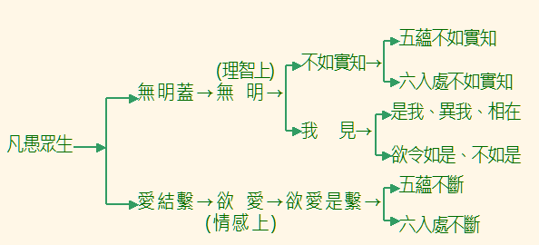

序 呂 勝 強
《雜阿含經二十選》修訂本的出書因緣，我們看到一個無我互動下成
就的歷程，可以作為真實學佛者在平淡、孤寂、堅毅中，修習佛法的見證
，值得把它報告出來，與有心學佛的朋友參考、共勉，並感恩三寶加被。
一九八０ 年三月，宏印法師繼台北之後，在高雄法雨講堂開辦南部法
輪班，以解讀及小組討論交錯的方式，來引導佛青們研讀《妙雲集》。這
種跳脫填鴨式窠臼，及自由討論、雙向對話的弘法教學模式，在台灣佛教
界（史），可能是首開前例的。十幾年後，它造就了一些具有佛法正確知
見，及獨立聞思能力的佛教青年。一九八二年十一月，接著，在高雄佛教
堂擴大舉辦第二期法輪班。半年結業後，由於青年朋友們反應熱烈，學佛
的願欲也很迫切，他們擔心法友星散，大家無緣共聚切磋佛法，於是，部
份幹部敦請宏印法師，於一九八三年八月，在慧瑜法師的「慈苑」，創立
了「清涼文教基金會籌備會」（以下簡稱為「清涼」），繼續佛法的聞思
修學，並推動人間佛教的思想教育工作。在這段難得的法緣中，春江師兄
自始就躬逢盛會。
「清涼」的活動，進行了三年多。當時，宏印法師已北赴圓光佛學院
主持教務，慧瑜法師則受邀住錫於鶯歌，會務因此出現瓶頸。後來，「清
涼」在一九八七年四月十四日發出通啟：
「……檢討三年多來的工作成效，答案是不盡理想的，總結的說：來
會的善友們獲益不多，而會務推動者，自身亦進境有限，這其中應有內外
的諸多因緣。……最後決定暫時選擇先『自修』後『外弘』的次第，希望
透過較為嚴謹的共修計劃，內自砥礪，致力於『萬里之行，始於足下』的
紮根努力，以期日後隨俟因緣繼續護教輔教的弘化工作。基於此項抉擇，
會裡訂定一個研讀經論原典的自修計劃，期間暫訂三年，共修的方向為：
經論法義的探討及掘發經論中對於淨化身心及適應現代社會之意趣，歡迎
有『長恆心』的同修共同參與……。」
當時，選訂研讀的第一部經，就是《雜阿含經》。
那時，我們根據印順導師在《佛法概論》中，所引據的每一部《雜阿
含經》，逐經挑出，而以印老編集的《雜阿含經論會編》為讀本，一字一
句地詳細研讀。參加的法友，有新學，有老參。在無常的因緣中，有人來
了，又走了。無人指導下，默默的，近乎孤獨的研讀、討論了二年左右。
後來，常常只有二、三人參加，然而，自始至終堅持到底的，本書作者是
少數中的一人。當時，他已開始將經典中相關的法義，初步作了摘要整理
，這個增上緣，醞釀了日後《雜阿含經二十選》的完成，這在作者的自序
中，已有詳細的說明。
《雜阿含經二十選》刊行迄今，整整有五個年頭。其間，由於海內外
學佛同修的函索，已再刷印了三次。作者有感於出書當時，對於《阿含》
之理解、體驗，尚欠深刻，甚且部分法義的解說，也有錯誤的地方，因此
，決定修訂再版。這是對於自己的修正，也是對於佛法以及讀者負責任的
態度。在修訂本書的過程中，作者並沒有把它當成是自己的著作，畢竟，
佛法是不屬於任何人的，所以，在彼此的討論中，都能在「法」的前提下
，放下主觀成見與情緒，這是熏修《阿含》的梵行饒益吧！
回顧作者在一九八０ 年的法輪班，初聞佛法以來，短短十年，即能於
佛法得個入處，並且信行堅固，這雖然有其智慧增上的根器，然而，更是
不斷的精進力，才能獲此成果。他又能將自己的體會心得，化為文字，回
饋給大家，此乃是「隨份、隨力、隨緣」的阿含精神中，盡其在我、自利
利他的實踐寫照。個人特別記述本書作者這一段學思的進程，是為了讚歎
一個「自依止、法依止」的學佛因緣，供後學者參考；同時，要呈現一樁
無我的公案--《雜阿含經二十選》修訂本，是在眾緣推移中完成的，它
正說明了《阿含經》最重要的無常、無我教誨。
佛法修行的第一著，就是「認識自我」。《雜阿含經》開宗明義，在
前面三個誦（章）中，就指出自我身心的「蘊、處、界」就是修習無我正
觀的關鍵所在，這也是本書所扣緊的主題。希望讀者們透過本書的介紹，
時時處處念茲在茲地，以正見來觀察、思惟六根觸對境界的身心反應；進
而放下書本，放下概念，深入的探索自己身心的實況，漸漸改變我們平常
不自覺的自我本位意識型態，以及行為上、情感上習以為常的慣性執著。
祝福大家：一步一步踏在「追尋」真理的道跡上，邁向那「不再追尋
」的離欲之境。
南無佛陀！南無達摩！南無僧伽！
一九九六‧四‧十八 寫於 岡山
自 序
回想以前在「清涼文教基金會籌備會」，參加讀書會，開始研討《雜
阿含經》時，曾經也受困於古代所翻譯經文用詞的隔閡，以及為數眾多的
經，不容易把握其胍絡。如果不是藉著同修們的彼此鼓舞，相互解疑，恐
怕早也半途而廢，讀不下去了。後來，從研討印順法師著的《印度佛教思
想史》中，覺得更應該多花心力在《雜阿含經》上。於是，自己又重頭讀
了幾次，並加以筆記歸類。期間，並因為這樣的因緣，而紓解了學佛以來
的一些關鍵性疑惑，使自己建立了「永不離佛法」的信念。
之後，有感於受《雜阿含經》的法雨被澤，遂以野人獻曝的心情，在
「正信佛學會」（一九九二年底更名為「正信佛青會」）介紹《雜阿含經
》。期間，有一些同修，也感到經文的不容易解讀，以及內容的龐雜，建
議以選讀的方式引導。幾經考量，將過去整理之筆記，再作歸納條理，選
出二十個主題，希望經由這二十個主題，表達《雜阿含經》的主要精神，
讓有興趣的同修，可以較為容易地進入《雜阿含經》的如實教誨中。而最
終目標，則是在於鼓勵讀者們，能夠自己逐經閱讀，希望能從經文中，去
發掘佛法之精髓，以及適合自己的修行方法，早日踏上佛陀的足跡。
文中「解說」的部分，以儘量接近經文精神的原則，用我們習慣的文
字來表達，希望能有語譯的效果，而沒有翻譯的拘泥。「討論」部分，則
蒐集《雜阿含經》中一些可以詮釋這個主題精神的經文，來作介紹，希望
能以《雜阿含經》來解釋《雜阿含經》。當然，難免也有囿於自己主觀意
見之處，尚待善知識之指正。最後，再將相關於這個主題的其它經文經號
列出，以提供更多的參考。而為檢閱之方便，文中所引用的每一經，都同
時依次標明《大正版大藏經》、《雜阿含經論會編》、《佛光版大藏經》
中《雜阿含經》的經文編號，簡稱為「大正本經號」、「印順本經號」（
以 ( ) 表示）、「佛光本經號」（以 [ ] 表示）。
一九九六年，高雄元亨寺的《南傳大藏經》中文譯本陸續出版，三版
增訂附錄了南傳元亨寺本相當的中譯經文。二００四年拙編《南、北傳雜
阿含經選讀》完成，四版除了依之作小部分修訂外，所附元亨寺本中譯經
文，則予刪除。附錄部分，也因作者已有結集，而予刪編。
宗教，不僅是信仰的，更是「身體力行」的。離開了自身的體驗與實
踐，大概只能剩下「形象的滿足」，「情感的寄託」罷了！如果您已接觸
佛教多年，對教義自認為也耳熟能詳，卻發現自己仍然跨不出步伐，沒有
較大的進境，或者常在學佛的路上，遇到十字路口，徘徊猶豫，那麼，就
請來試著走入純樸的《雜阿含經》世界吧！也許可以為您帶來另一個春天
呢！
歸依佛 ‧ 歸依法 ‧ 歸依僧
一九九一‧十一 完 稿
一九九六‧二 二版修訂
一九九八‧二 三版增訂
二００四‧九 四版修訂
大 綱 表 解：
